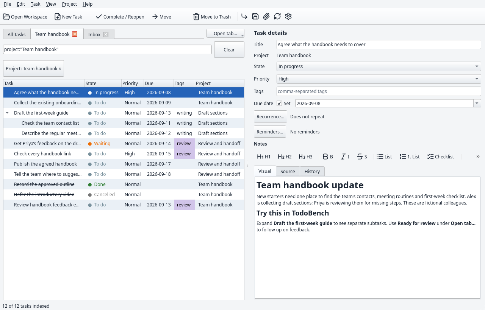
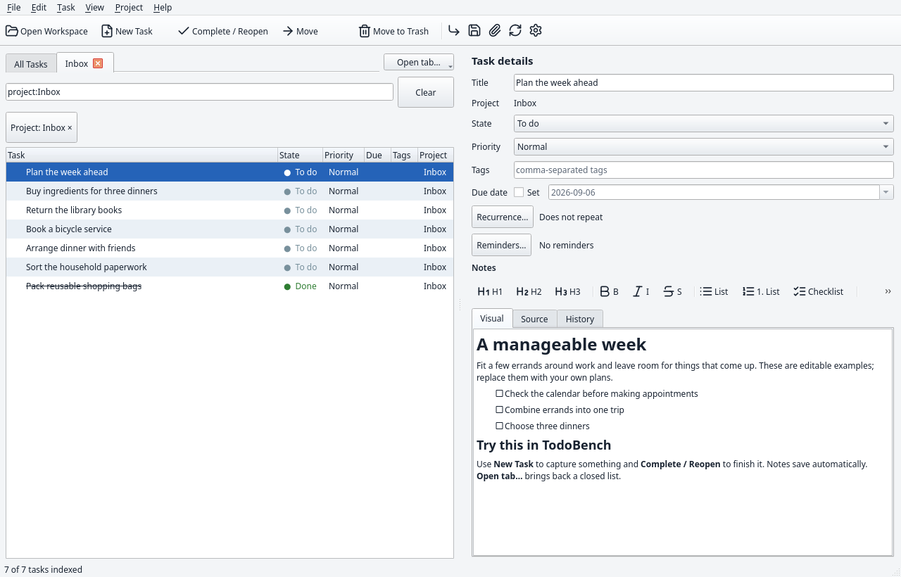
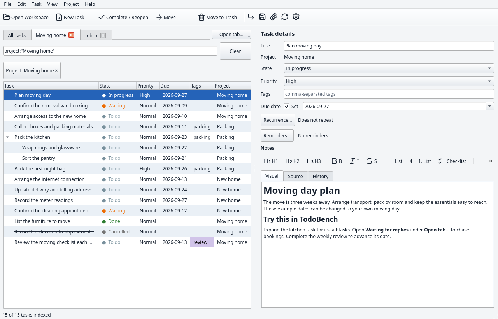
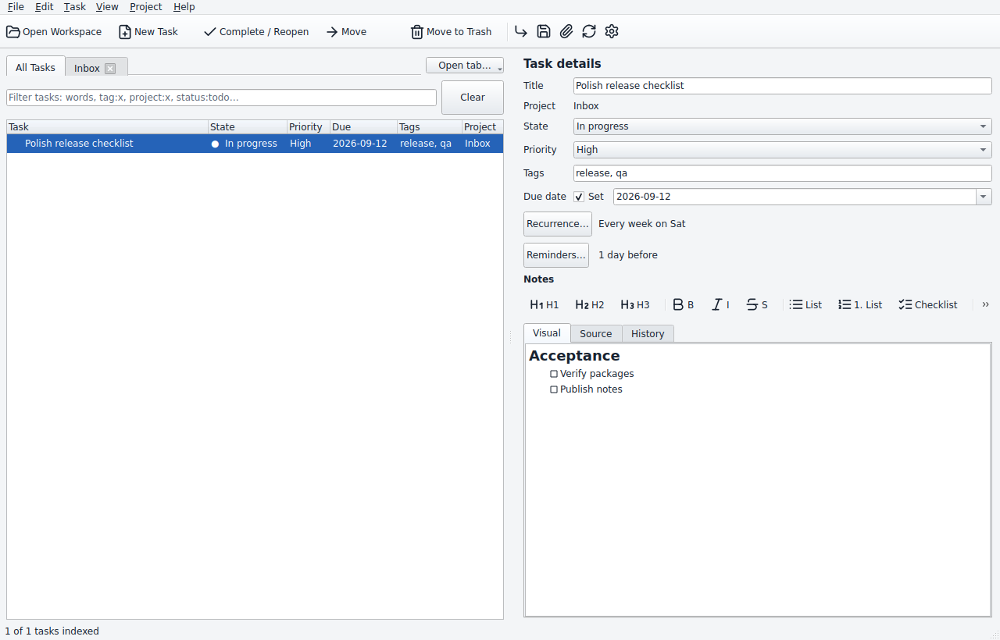

Give the work a shape.
Group tasks into projects, break them into subtasks, and track progress with states, priorities, tags, and due dates.
Plan the handbook update Done
Draft the first-week guide
Check the team contact list
A little more order. A little more room to think.
A clear place for everything you need to do, with the details right beside it. A native desktop app built around ordinary Markdown folders.

Keep the whole picture
A task can be a quick errand or one part of a much bigger plan. Keep the structure, notes, and follow-up together.
Group tasks into projects, break them into subtasks, and track progress with states, priorities, tags, and due dates.
Write in the visual Markdown editor, edit the source, and revisit history. Add checklists, links, and attachments without losing your place.
Review the draft, check the details,
and attach the final brief.
Switch between project tabs and saved views. Combine words, tags, project names, and task states to bring the right work into view.
tag:review status:todoSet a due date, add reminders, and repeat tasks on a calendar schedule or after completion. Keep routine work alongside everything else.
An ordinary folder. On purpose.
Open your workspace in a file manager and it makes sense. Tasks and project notes are Markdown. Settings are JSON. Attachments live alongside the tasks they belong to.
my-workspace/
├── settings.json
└── projects/
└── inbox/
├── project.md
└── tasks/
└── plan-the-week/
├── task.md
└── assets/
└── brief.pdfMake yourself at home
Choose an empty Inbox or an editable sample. Everyday jobs, a house move, a team project, website work, and a guided feature tour are ready to try.


Preview a sample or begin with an empty workspace.
Files go directly into the empty folder you choose.
Add your work. Your tabs and filters return next time.
Sample people and projects are fictional. Dates adjust to creation day; sample reminders start off. Getting-started guide ↗
Settle into your workspace
Eleven appearance choices, with custom colors for each preset.
Preview four of them in the actual app.

Ready when you are
Download TodoBench v@@VERSION@@. Free, open source, and built for your desktop.
LINUX
x86_64 · Ubuntu 24.04 or compatible newer systems
Download AppImage Portable tar.gzMake the AppImage executable. Without FUSE, useAPPIMAGE_EXTRACT_AND_RUN=1.WINDOWS
x64 · Per-user installation
No administrator privileges needed
MACOS
Separate builds for
Apple Silicon and Intel
C++20 and Qt. A documented workspace format. Corresponding source and dependency notices with every release.
A few useful details
No hosted account is required. Your workspace is a local folder, and task management works offline. You need a connection to download the app or visit external links.
Yes. Tasks and project notes use Markdown with YAML front matter, and settings use JSON. Other writers should follow the workspace v1 specification for identities, revisions, locking, and conflict handling. Unknown fields and untouched note bodies are preserved during metadata edits.
Automatic synchronization and merging are outside v@@VERSION@@. You can transfer a complete workspace folder or export a standard .7z snapshot, including attachments, history, trash, and recovery material. Avoid concurrent writers unless they follow the documented coordination rules.
Your workspace remains an ordinary folder of readable files. Relative attachment links keep supporting files with their tasks. Uninstalling the app leaves workspaces outside its installation folder intact.
Yes. TodoBench is free software under GPL-3.0-or-later. You can use, study, modify, and redistribute it under the license terms. Releases include source and build instructions.
{kind=link}
{kind=link}
{kind=link}